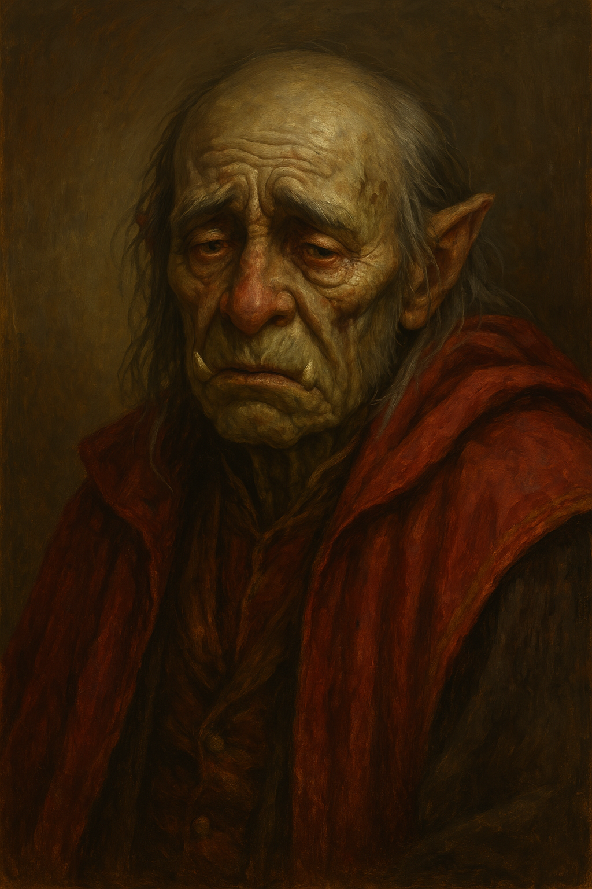
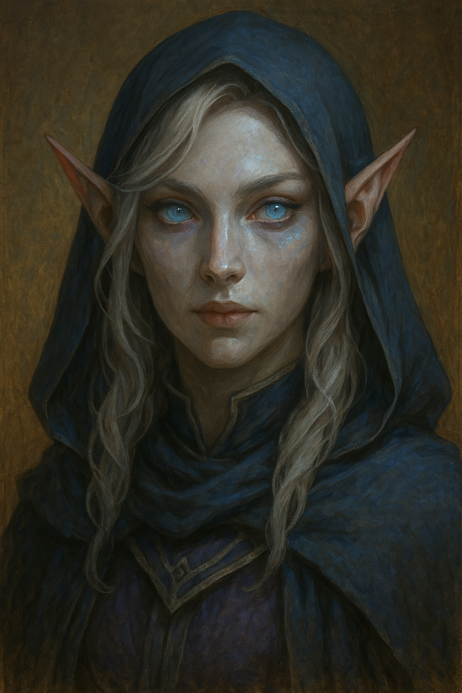
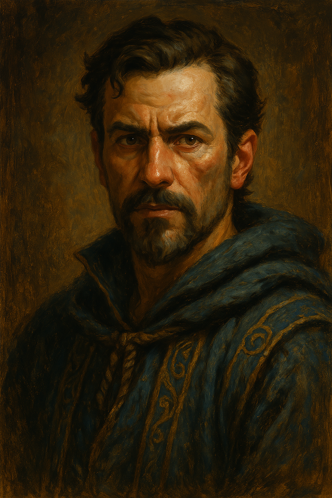
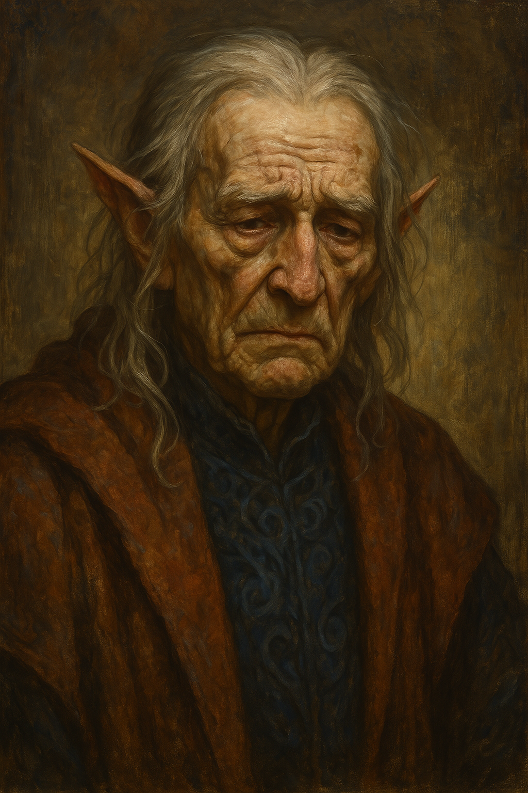

Baasha
Charming‘s half-orc mentor, who belonged to the Barons. Was last told to row a boat from his lighthouse by Charming.
Enania
Astral Elf, sorta Leader of Lost Legacy Seekers (basically outlaw relic hunters and sellers); put Conriek and Kenwyn on a task to retrieve Ancient Crowd of Mafedors from Harmony Embrace Sanctum. They can do so by finding a secret map showing it's location - it is rumoured to be guarded inside Eldertome Wardens Keep (close to Nouver). She will greatly reward them + release Figol.
Mycanand
Biggest Barons hater in Dasan. Was the person who stole Talos statue ruby eye and was terrorizing Ludgo port with endless whirpool. Charming might‘ve been there when his parents got killed.
Olstar Ilibalar
Old half-elf; Talos priest. Used to be best friends with Nick Van Brickle and Tyrcoril.
Thrain Thunderpeak

One of the biggest opps to the party. Went to Duchy of Nouran to join Goliath mercenary band called Pact of Titans.
Zhaq Elf-Axe

Orc Leader of the Tribals
Neral Falcin
The Tiefling Caravan master who set the party up, but was killed by the Bhaalists themselves.
Unknown Half-Orc
Worked alongside Neral Falcin, but escaped.
Figol
Innocent wood elf farmer, who travelled with the party. Later on got „abducted“ by Enania, who currently uses him as a bargaining chip for her deal.
Dareon
Bhaal Acolyte who was converted by Kenwyn to abandon Bhaal, later on got captured and tortured, fate uncertain
Cornelius Fullthorn
Halfling bard, who beefs with Charming; got bitched in Darrenfall bard-off
Earl Earl
Bozo who lost Darrenfall, fate unknown.
Ronald Paul
Priest of Corellon, who got rescued by the party. Now has converted to Lathander and resides in the monastery.
Majal
Iron Hearth Coalition delegate, who gave Charming the permission to visit the place.
Tyrcoril Qicaryn
Mad scientist, used to be homies with Nick Van Brickle. Fate unknown.
Raj Das
Leader of the Barons.
Vulmar Leonieth
Leader of the Damned Knives.
Crispin Easttower
half-elf Damned Knives messenger, who was chased by Kenwyn, after that his kneecaps got fucked over. Fate uncertain.
Varethok Thunderpeak
Son of Thrain Thunderpeak, now dead.
Brother Asnol
High Priest of Lathander. Buy slaves from the Damned Knives.
Elyon Gretoris
High Elf leader of the Saviors of the Pure.
Hagwin
Damned Knives Berxley outpost leader. Died alongside his crew.
Koran
Priest of Lathander, who almost died in Deathfall Village. Told the party he would repay them in future.
Jimfred
Kobold who used to be servant of Tyrcoril, now considers Conriek as his master.